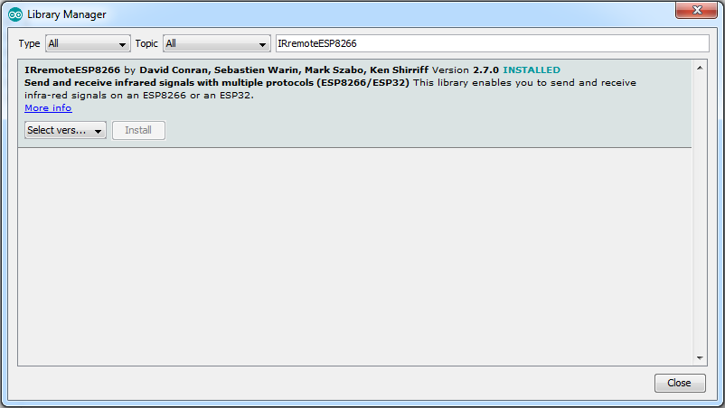

Background
In this task - the point to acheive 2 things:
- Learn how to download a new library
- emulate an IR remote control
Download the library
Open the library manager (Sketch->Include Library->Manage Libraries)
Then search for "IRremoteESP8266"

Install the library and continue to the next step.
IR circuit
The first step is now to build the circuit.
For transmitting IR signals, an IR LED should do the trick, however,
since the IR receiver might be far away - it is a good idea to ampilfy the LED with a transistor
The circuit should be similar to this:

Note that this circuit doesn't have a current limit resistor on the LED,
and that IR LEDs tend to burn out.
IR protocol
Next is the IR protocol
The library we installed support all sorts of IR protocols
For this workshop - we're using the NEC protocol.
It's quite simple and easy to understand.
The NEC protocol uses pulse distance encoding of the bits.
Each pulse is a 560µs long 38kHz carrier burst (about 21 cycles).
A logical "1" takes 2.25ms to transmit, while a logical "0" is only half of that, being 1.125ms.

In this protocol, messages are comprised of "Address" and "Command"
Each one is 8 bits long.
The actual command is "Address"+"!Address"+"Command"+"!Command" so that some errors can be detected.

This might take some time to implement, but since the library we have supports the protocol,
everything can be implemented in a few lines:
Include the libraries:
#include <IRremoteESP8266.h>
create an IRsend object with the pin that will be used for IR signal:
#include <IRsend.h>
IRsend irsend(D8);
initialize the object (once in setup function)
irsend.begin();
Then simply send an encoded message:
irsend.sendNEC(irsend.encodeNEC(address, command));
Putting all together
The data still missing here is what address and command to use
command part is easy - "1" for on, "0" for off.
address will be a combination of your group number:
which is no longer than 5 bits.
and 1 in bit 6. So 0x20+
This should all be done when a request is sent to:
192.168.1.
with a single argument - state. Which will be on/off.
One more thing that needs to be updated is the status response which should include the TV state (0 for off, 1 for on):
{"name":"
Testing TV remote
192.168.1.192.168.1.
Verification
Make sure you have an IR verification device next to you and select the correct button.
The device number is the last number in the IP address (192.168.1.22 -> 22)
Click "Test me" when you are ready.
Lights control code
#include <ESP8266WiFi.h>
#include <ESP8266WebServer.h>
#include <WiFiUdp.h>
#include <time.h>
#include <IRremoteESP8266.h>
#include <IRsend.h>
/*******************************
* defines and constants *
*******************************/
const char* ssid = "intel makers";
const char* password = "1234567890";
#define ONBOARD_LED_PIN D4
#define THERMISTOR_1_DIV_B (0.000253165)
#define THERMISTOR_T0 (293)
#define THERMISTOR_R0 (100000)
#define R1_VALUE (100000)
/*******************************
* Globals *
*******************************/
ESP8266WebServer server(80);
int g_lights[3] = {0, 0, 0};
int g_light_pins[3] = {D5, D6, D7};
IRsend irsend(D8);
int g_tv_state = 0;
/*******************************
* service functions *
*******************************/
float getThermistorResistance(int resistor_value) {
// first - read the analog input to get the voltage across the thermistor
int a_read = analogRead(A0);
// analog input is 0-1023 where 1023==3.3V
float thermistor_voltage = (((float)a_read)/1023.0)*3.3;
// current across thermistor is the same as across the resistor,
// so calculate over the known resistor value
float thermistor_current = (3.3 - thermistor_voltage)/resistor_value;
// R = V/I
return (thermistor_voltage / thermistor_current);
}
int getTemperature(float thermistor_1divB, int thermistor_t0, int thermistor_r0, int resistor_value) {
float thermistor_resistance = getThermistorResistance(resistor_value);
// caluclate coefficient (1/b*ln(r/r0) - replace ln with log)
float coeff = thermistor_1divB * log(thermistor_resistance/thermistor_r0);
// calculate 1/t0+1/b*ln(r/r0)
coeff = (1.0/thermistor_t0) + coeff;
// invert the result since formula is for 1/t
float temp_kelvin = 1.0 / coeff;
// translate from Kelvin to Celsius
float temp = temp_kelvin - 273;
// round the temperature
return round(temp);
}
void getNtpTime() {
Serial.println("Trying to get time");
configTime(2 * 3600, 0 * 3600, "192.168.1.100"); //GMT+2, no DST
while (time(nullptr) < 100000) {
delay(100);
Serial.print(".");
}
Serial.println("\nGot Time");
}
void getTimeString(char* buff){
time_t now = time(nullptr);
strftime(buff, 10, "%H:%M", localtime(&now));
}
/*******************************
* server callbacks *
*******************************/
void handleRoot(){
server.sendHeader("Access-Control-Allow-Origin", "*");
server.send(200, "text/plain", "Hooray!, your ESP8266 server is alive!");
}
void handleNotFound(){
server.sendHeader("Access-Control-Allow-Origin", "*");
server.send(404, "text/plain", "Error 404 - ESP8266 server could not find the page you were looking for");
}
void sendJsonResponse(){
server.sendHeader("Access-Control-Allow-Origin", "*");
char time_buff[10];
String message = "{\"name\":\"
message += "\"number\":
message += "\"temperature\":";
message += getTemperature(THERMISTOR_1_DIV_B, THERMISTOR_T0, THERMISTOR_R0, R1_VALUE);
message += ",";
message += "\"time\":\"";
getTimeString(time_buff);
message += time_buff;
message += "\",\"lights\":[";
for (int i=0; i<3; i++) {
message += g_lights[i];
if (i < 2) {
message += ",";
}
}
message += "],\"tv_state\":";
message += g_tv_state;
message += "}";
server.send(200, "application/json", message);
}
void handleLight() {
// init both arguments
int number = -1;
int state = -1;
Serial.println("Handling 192.168.1.
for (int i=0; i<server.args(); i++){
if (server.argName(i)=="number") {
number = server.arg(i).toInt();
if (number > 0 && number < 4) {
number -= 1;
}
}
if (server.argName(i)=="state") {
if (server.arg(i) == "on") {
state = 1;
}
if (server.arg(i) == "off") {
state = 0;
}
}
}
if (number != -1 && state != -1) {
g_lights[number] = state;
digitalWrite(g_light_pins[number], g_lights[number]);
}
sendJsonResponse();
}
void handleTelevision(){
int state = -1;
Serial.println("Handling 192.168.1.
for (int i=0; i<server.args(); i++){
if(server.argName(i)=="state") {
if (server.arg(i) == "on") {
state = 1;
}
if (server.arg(i) == "off") {
state = 0;
}
}
}
if (state != -1) {
g_tv_state = state;
irsend.sendNEC(irsend.encodeNEC(0x20 |
}
sendJsonResponse();
}
/*******************************
* setup and loop *
*******************************/
void setup() {
// setup the board pins to output mode
pinMode(ONBOARD_LED_PIN, OUTPUT);
for (int i=0; i<3; i++) {
pinMode(g_light_pins[i], OUTPUT);
}
// start serial connection
Serial.begin(115200);
Serial.println("");
Serial.print("Connecting to ");
Serial.println(ssid);
// set WiFi to STA mode
WiFi.mode(WIFI_STA);
// set static IP
IPAddress ip(192,168,1,
IPAddress gateway(192,168,1,254);
IPAddress subnet(255,255,255,0);
WiFi.config(ip, gateway, subnet);
// connect to AP
WiFi.begin(ssid, password);
// wait until connection is complete
while (WiFi.status() != WL_CONNECTED) {
delay(500);
Serial.print(".");
}
Serial.println("");
Serial.println("WiFi connected");
Serial.println("IP address: ");
Serial.println(WiFi.localIP());
// get time from NTP
getNtpTime();
server.on("/", handleRoot);
server.on("/json", sendJsonResponse);
server.on("/light", handleLight);
server.on("/television", handleTelevision);
server.onNotFound(handleNotFound);
server.begin();
irsend.begin();
}
void loop()
{
// toggle the LED each 0.1 second
digitalWrite(ONBOARD_LED_PIN, HIGH);
delay(100);
digitalWrite(ONBOARD_LED_PIN, LOW);
delay(100);
server.handleClient();
}